Model
Analytical fluid mechanics, CFD, numerical methods, MATLAB and Python.
LOS ANGELES, CALIFORNIA · RECENT PH.D. GRADUATE
Mechanical Engineer · Fluid Systems · CFD · Test & Development
I design, model, build, instrument, and validate complex engineering systems—combining first-principles analysis, CFD, experimental diagnostics, mechanical design, fabrication, controls, and data analysis.
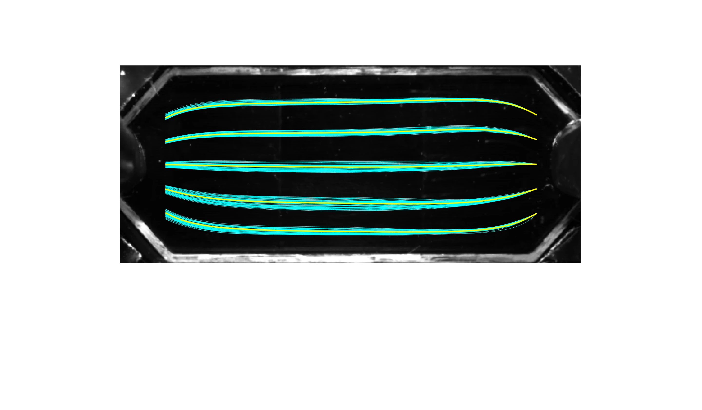
01 / PROFILE
I am a mechanical engineer with a Ph.D. in Engineering Sciences (Mechanical Engineering) from UC San Diego and hands-on experience leading the design, fabrication, instrumentation, analysis, and validation of fluid and experimental systems.
My work spans pulsatile and oscillatory flows, pressure and wall-shear analysis, CFD, experimental diagnostics, custom test rigs, embedded controls, image processing, and prototype development. I am especially effective where modeling and physical testing need to inform one another.
I have coordinated multidisciplinary development efforts, planned experimental campaigns, diagnosed system-level problems, documented results, and mentored engineering teams through design reviews, fabrication, testing, and troubleshooting.
Analytical fluid mechanics, CFD, numerical methods, MATLAB and Python.
CAD, machining, prototype fabrication, instrumentation and embedded controls.
Test planning, calibration, uncertainty analysis and model-to-data comparison.
Root-cause troubleshooting, design iteration and engineering recommendations.
02 / PROJECT COLLECTION
13 projects across fluid systems, simulation and experimental hardware. Explore the original imagery and supporting file lists.
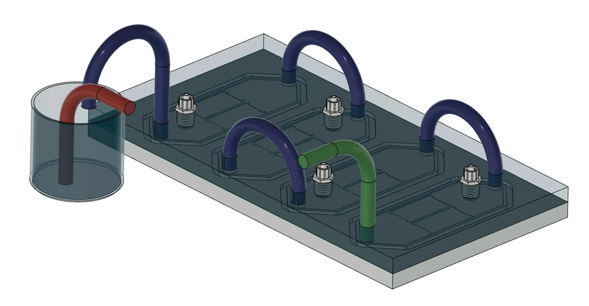
Designed and validated a serial chamber system for pulsatile pressure and spatially uniform wall shear in endothelial-cell testing. Analytical models, CFD, instrumentation and flow visualization connect the design to measured performance.
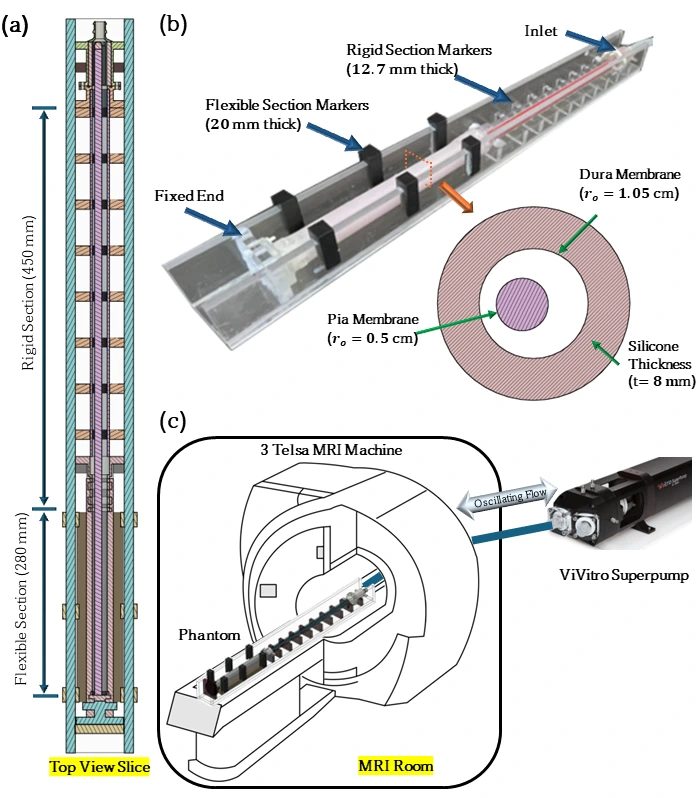
Built a canonical spinal-canal flow phantom and developed MATLAB image-analysis workflows to study oscillatory displacement and Lagrangian drift using Time-SLIP MRI.
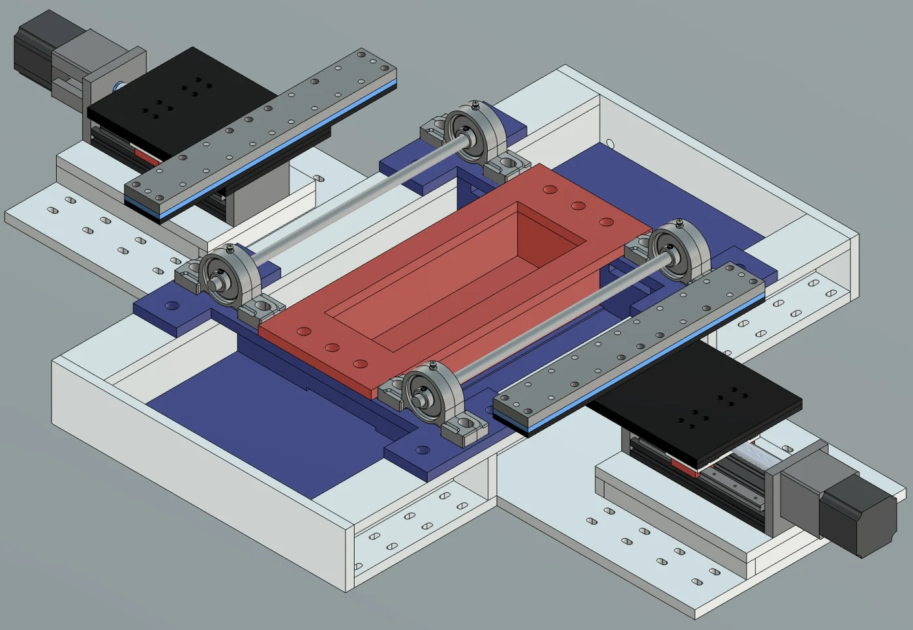
Combined analytical flow modeling, chamber fabrication, motor control and dye tracking to investigate flow over a stretching bottom wall.
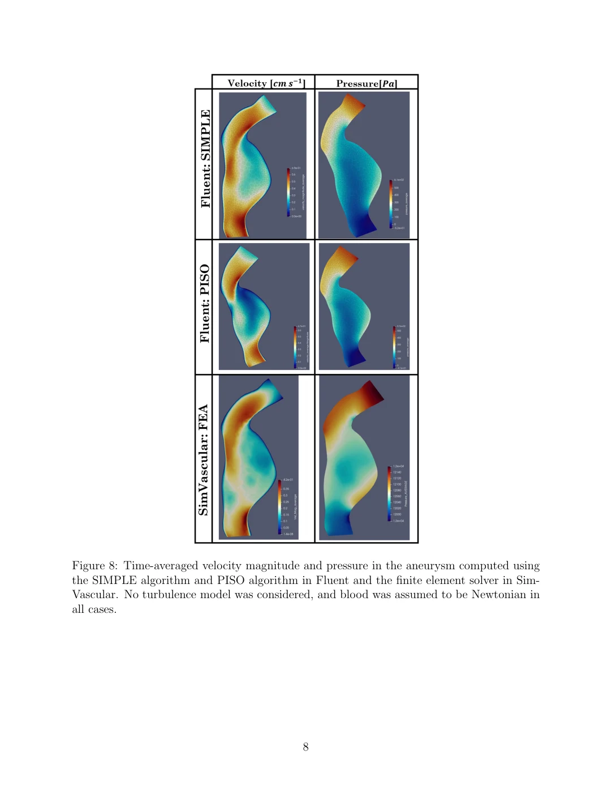
Compared blood-flow simulations using ANSYS Fluent and SimVascular, with supporting models, meshes, flow visualizations and reports examining solver and constitutive-model choices.
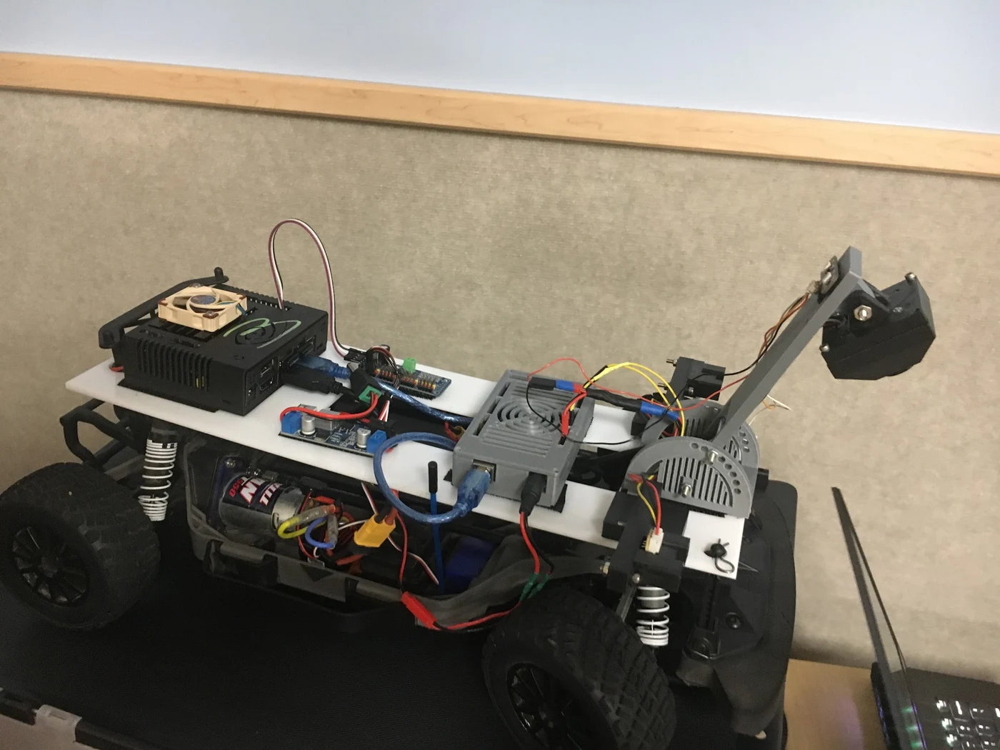
Team project integrating two infrared proximity sensors, an Arduino Mega and a Jetson Nano to slow or stop a vehicle as obstacles approach.
Prototype for cyclic stretching of cell-culture chambers, with Arduino control firmware retained in the project archive.
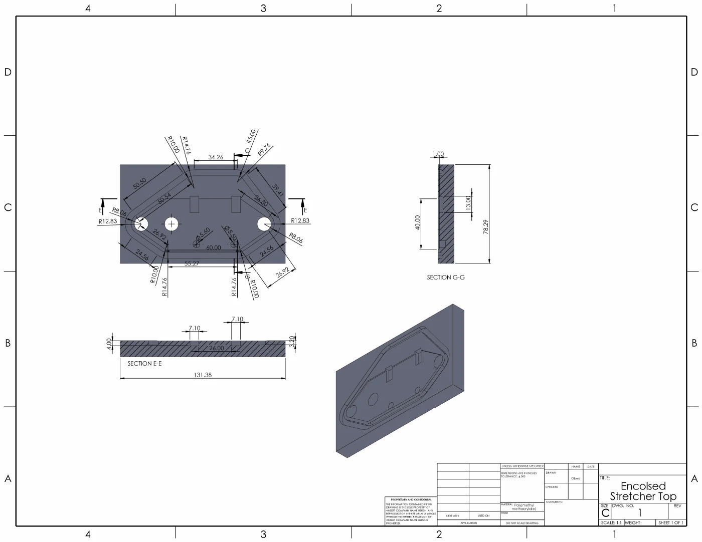
Enclosed stretching-device design documented through top and bottom engineering drawings. The supplied Arduino firmware is shared with the multiplex cell stretcher.
Arduino control concept combining thermocouple readings, relay-driven heating, humidity sensing and an LCD interface. The supplied firmware is development code.
Motorized silicone-molding hardware supported by separate servo and stepper motor-control sketches.
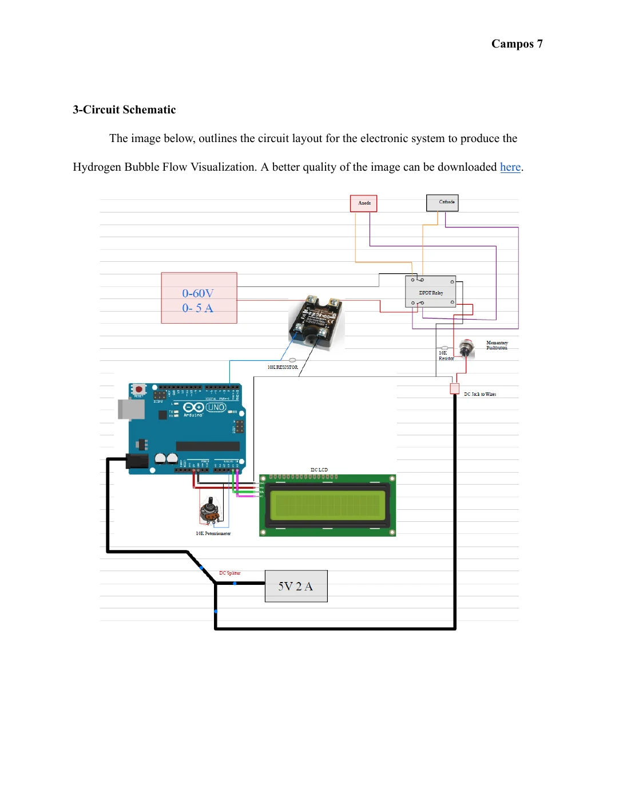
Electronic system for hydrogen-bubble visualization in a water channel, documented with a circuit design report and Arduino timing-control code.
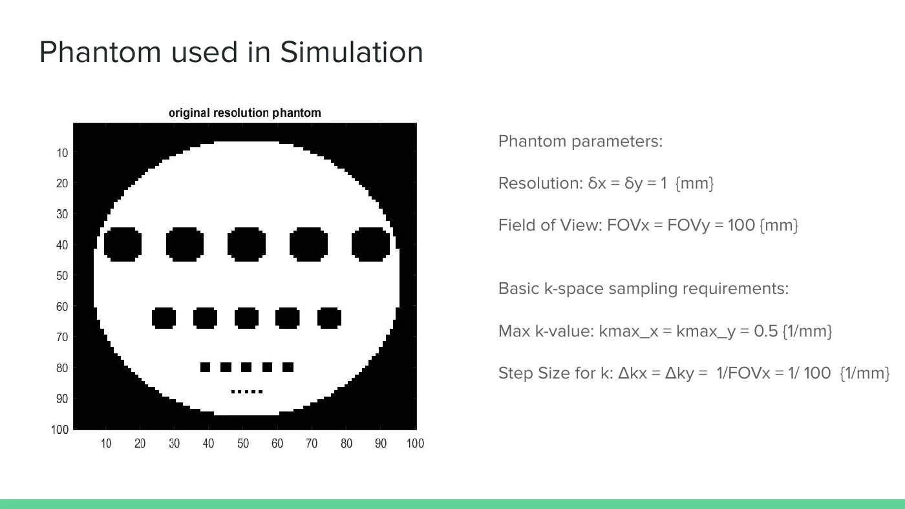
Team MATLAB study of Parallel Imaging with Localized Sensitivity: coil-sensitive sub-image reconstruction and combination, supported by a presentation and an archive of MATLAB figure utilities.
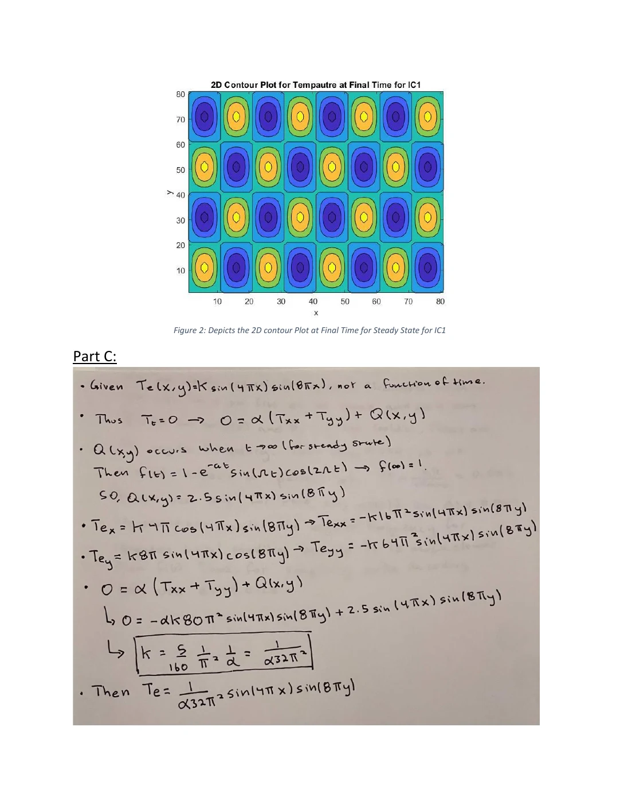
Numerical study of two-dimensional diffusion with heat sources and sinks, including ADI routines, a Thomas algorithm implementation and comparisons with exact solutions.
C implementation exploring balance control, wheel encoders and inertial measurements. The supplied source explicitly notes unresolved errors; this is an in-progress controls project.
All project files — names and original paths ↓ · Reviewed filename mapping ↓
DOCTORAL RESEARCH / 2026
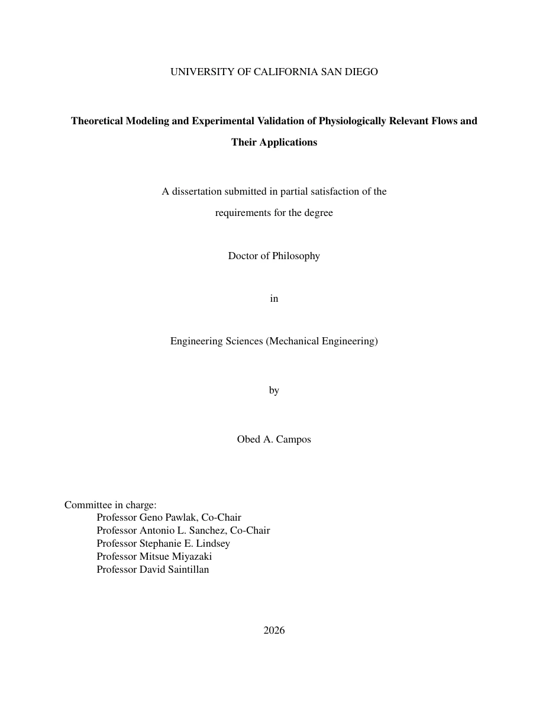
UC SAN DIEGO · MECHANICAL ENGINEERING
Obed A. Campos · Doctor of Philosophy in Engineering Sciences (Mechanical Engineering)
My dissertation combines theoretical analysis and experimental validation of physiological flows, spanning cerebrospinal-fluid transport and controlled mechanical environments for endothelial-cell studies.
03 / EXPERIENCE
Multiscale Flow Physics Laboratory · UC San Diego
Led design, manufacture and validation of a canonical spinal-canal flow model for MRI-based cerebrospinal-fluid measurements. Planned experimental campaigns and integrated MRI data, MATLAB/Python processing, theoretical models and computational analysis.
Experimental Bio-Fluidics Laboratory · UC San Diego
Led development and testing of pulsatile flow systems applying controlled pressure, wall shear and mechanical loading. Used analytical models and ANSYS Fluent, then compared predictions with experimental results to validate system performance and refine designs.
Lasheras–del Álamo Biomechanics Laboratory · UC San Diego
Designed experimental devices and supported prototype development involving mechanical design, electronics, controls, fabrication constraints, biological requirements and validation needs.
UC San Diego
Supported mechanical-engineering instruction, assessment, student feedback and technical communication.
04 / TECHNICAL TOOLKIT
05 / PUBLICATIONS
Campos, O. et al. · Submitted to Scientific Reports.
Campos, O. A. et al. · Journal of Biomechanical Engineering.
DOI ↗Sincomb, S. et al. · European Journal of Mechanics - B/Fluids.
DOI ↗Schwartz, A. B., Campos, O. A. et al. · Frontiers in Cell and Developmental Biology.
DOI ↗06 / EDUCATION & LEADERSHIP
Mechanical Engineering · University of California, San Diego
Mechanical Engineering · University of California, San Diego
Specialization in Controls & Robotics · University of California, San Diego
07 / CONTACT
Based in Los Angeles and interested in mechanical, fluid systems, test & development, CFD and multidisciplinary R&D engineering opportunities.